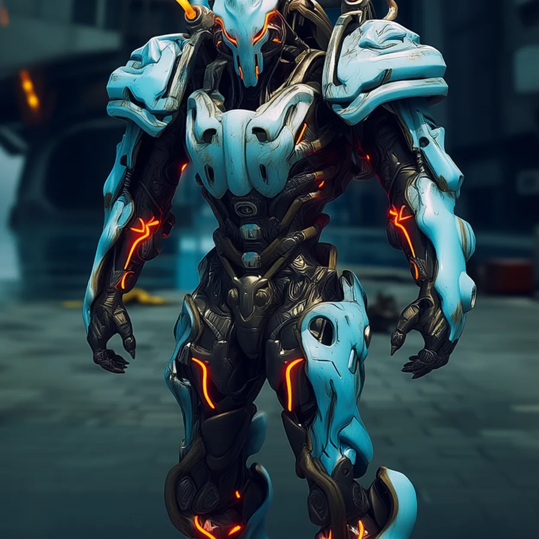
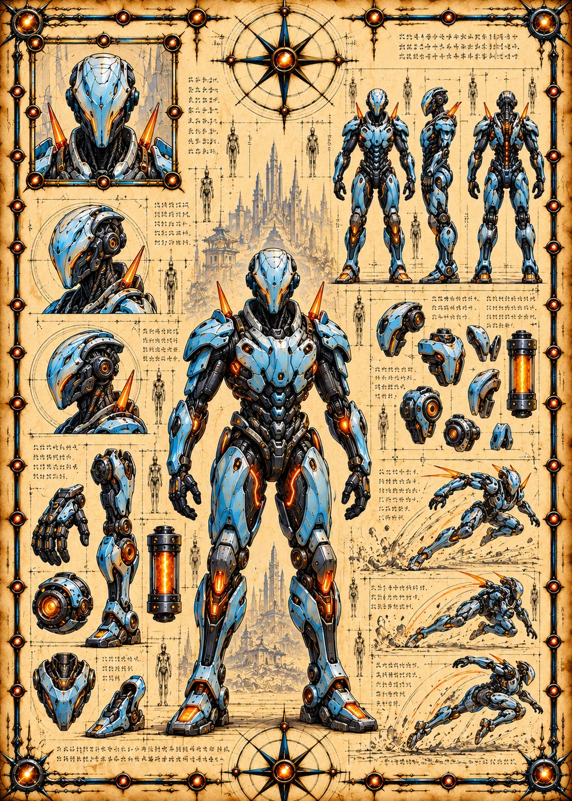

©
©
GENEZYS ARCHIVE · Earth 2 · Synthbot
Qor
Optic Gunner

Archive record
Qor's optics were salvaged from a fallen Synthbot, as the Syndicate's Ledger requires: nothing that falls is wasted. The Thermal Ray sweeps the flanks with heat that lingers, and burns twice as hot when only one enemy remains. Qor's pilot claims the old optics still show things that are not there.
Combat signature
Thermal Ray
200 Cosmara
120 Animus
200 Vitalis
Discharges concentrated heat beam: Deals 30 damage to enemies on the edges for 2 rounds. If only 1 enemy is left the damage is doubled.
Genezys 04:02 ™&©2026LEGIONS
